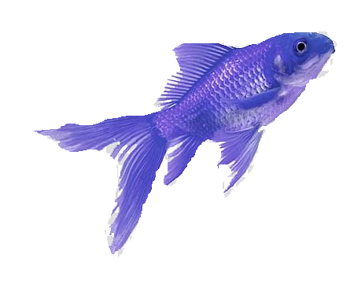
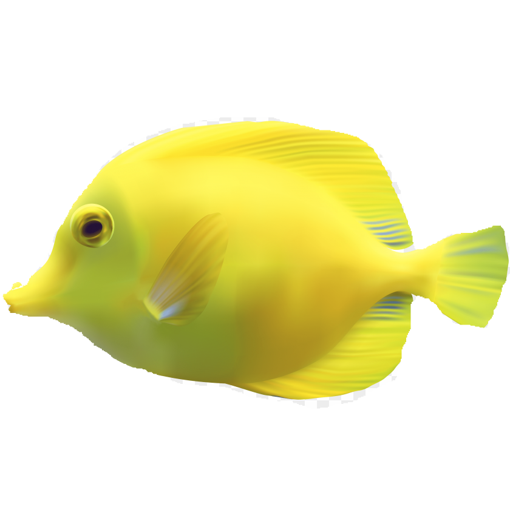

The Amazon River is located in South America, and travels through the countries of Brazil, Peru and Columbia. It is the largest river (in terms of volume) in the world, with a discharge of 208,978 cubic meters per second. It is also often thought of as the longest river, at 6993 kilometers, although there is some debate about the method used for measuring.
The Amazon is also famous for being a rich and biodiverse ecosystem. Both the river itself and the shores along its edges are full of a variety of important plant and animal species, many of which can only be found in this region.
The Ganges river flows through India and Bangladesh. The river measures 2510 kilometers in length, and is a distinct landmark, but is more famous for being of such high religious significance. In Hindu culture and religion, the Ganges is thought to be the most sacred body of water in the world. More mythically, the river is an embodiment of the goddess Ganga, who was the daughter of Himalaya, the mountain god.
Because of its significance, cities and pilgrimage sights exist along the banks of the river, and people can be seen bathing, washing clothes, and burning funeral pyres on the river. All aspects of life take and give back to this one water source.
The Nile River is a major north-flowing river which [asses through much of northern Africa on its journey to the Mediterranean Sea. It travels through both Egypt and Sudan, but has three major sources: Blue Nile River, White Nile, Atbarah which pass through Ethiopia and Uganda, before reaching Sudan and South Sudan.
Aside from its unusual northward flow, the Nile is best known for its presence amidst a desert. As Egypt, and much of Sudan is a dry, desert, sandy landscape, the Nile river is the primary water source for all life in the area. It is the sole reason such prominent cities were able to be established in the area, and it offered irrigation and the possibility of fertile soil to ancient Egyptian civilizations.

A cool fish with two colors

A happy blue fish

A bright yellow fish

A small Nemo fish
A sunny orange fish
A very fast red fish